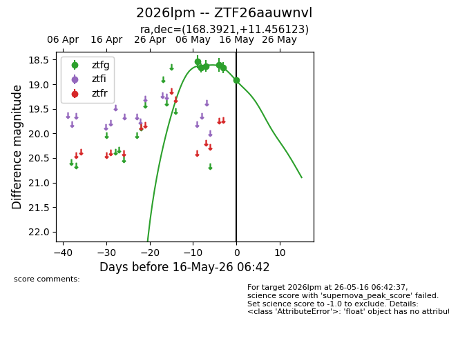
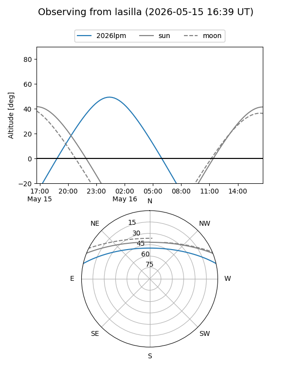
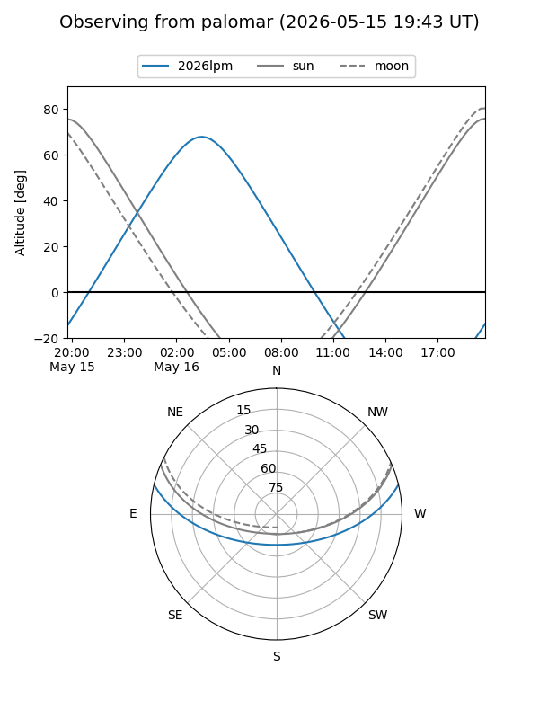
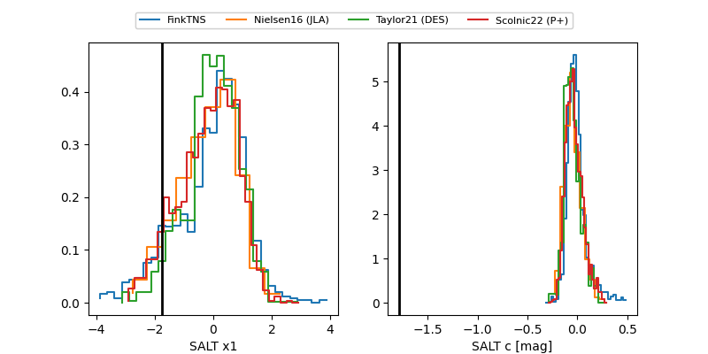

2026lpm
Target 2026lpm at 2026-05-16 06:44
Aliases and brokers:
FINK: link
Lasair: link
ALeRCE: link
TNS: link
YSE: link
alt names
ZTF26aauwnvl (ztf,fink_ztf)
2026lpm (tns,yse)
Coordinates:
equatorial (ra, dec) = 168.3921,+11.45612
equatorial (HMS+DMS) = 11:13:34.11,+11:27:22.04
galactic (l, b) = (242.4682,+62.18913)
Flags:
Photometry:
last ztfg=18.92
6 ztfg detections
Lightcurve

Visibility


Additional plots
